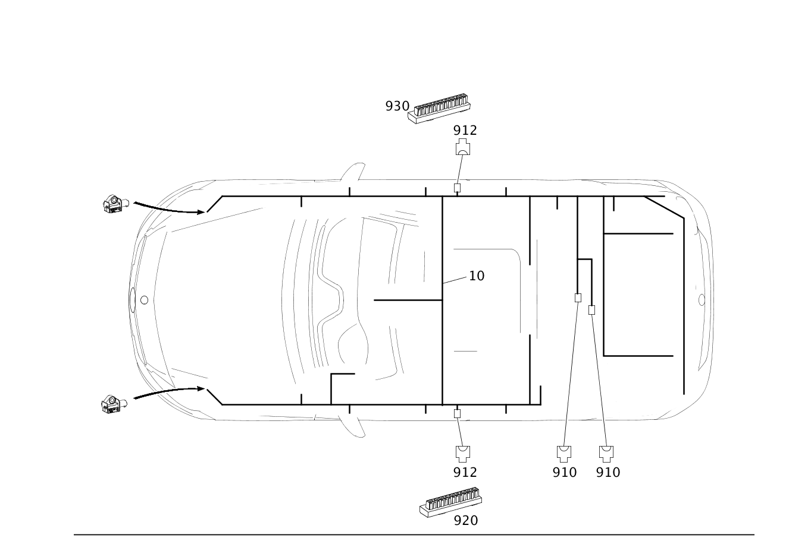

| № | Артикул | Название | Кол. | Примечание | Ограничение |
|---|---|---|---|---|---|
| 10 | A 176 540 00 06 | Электрический жгут (ELEKTRISCHER LEITUNGSSATZ) | 1 | ОСНОВ.ЖГУТ ЭЛЕКТРОПРОВ.НЕСУЩ.ОСНОВ.КУЗ. [001660] В ЖГУТЕ ЭЛЕКТРОПРОВОДКИ ИМЕЮТСЯ СООТВЕТСТВ. СПЕЦ.ИСПОЛНЕНИЯ СОГЛАСНО ЗАВОДСКОМУ НОМЕРУ АВТОМОБИЛЯ [622] ПРИ ЗАКАЗЕ УКАЗАТЬ ИДЕНТ.№ | |
| 110 | A 176 540 37 05 | - Электрический жгут (ELEKTRISCHER LEITUNGSSATZ) | 1 | ТОПЛИВНАЯ СИСТЕМА Рулевое управление: Влево | (803/804/805/806+-140) |
| 110 | A 176 540 43 05 | - Электрический жгут (ELEKTRISCHER LEITUNGSSATZ) | 1 | ТОПЛИВНАЯ СИСТЕМА Рулевое управление: Вправо | (803/804/805/806+-140) |
| 160 | A 176 540 24 05 | - Электрический жгут (ELEKTRISCHER LEITUNGSSATZ) | 1 | СРЕДНЯЯ КОНСОЛЬ | (803/804/805/806+-140)+-(M133/516) |
| 160 | A 176 540 24 05 | - Электрический жгут (ELEKTRISCHER LEITUNGSSATZ) | 1 | СРЕДНЯЯ КОНСОЛЬ | (806+140/807/808/809/800/801)+-(M133/516) |
| 160 | A 176 540 15 05 | - Электрический жгут (ELEKTRISCHER LEITUNGSSATZ) | 1 | СРЕДНЯЯ КОНСОЛЬ | (803/804/805/806+-140)+(301/950/P27/P34/P59)+-(M133/516) |
| 160 | A 176 540 15 05 | - Электрический жгут (ELEKTRISCHER LEITUNGSSATZ) | 1 | СРЕДНЯЯ КОНСОЛЬ | (806+140/807/808/809/800/801)+(301/950/P27/P34/P59/P73)+-(M133/516) |
| 160 | A 176 540 16 05 | - Электрический жгут (ELEKTRISCHER LEITUNGSSATZ) | 1 | СРЕДНЯЯ КОНСОЛЬ | (803/804/805/806+-140)+518+(301/950/P27/P34/P59)+-(M133/516) |
| 160 | A 176 540 59 05 | - Электрический жгут (ELEKTRISCHER LEITUNGSSATZ) | 1 | СРЕДНЯЯ КОНСОЛЬ | (803/804/805/806+-140)+U62+-(M133/516) |
| 160 | A 176 540 59 05 | - Электрический жгут (ELEKTRISCHER LEITUNGSSATZ) | 1 | СРЕДНЯЯ КОНСОЛЬ | (806+140/807/808/809/800/801)+U62+-(M133/516) |
| 160 | A 176 540 59 05 | - Электрический жгут (ELEKTRISCHER LEITUNGSSATZ) | 1 | СРЕДНЯЯ КОНСОЛЬ | (803/804/805/806+-140)+U62+(301/950/P27/P34/P59)+-(M133/516) |
| 160 | A 176 540 59 05 | - Электрический жгут (ELEKTRISCHER LEITUNGSSATZ) | 1 | СРЕДНЯЯ КОНСОЛЬ | (806+140/807/808/809/800/801)+U62+(301/950/P27/P34/P59/P73)+-(M133/516) |
| 160 | A 176 540 07 02 | - Электрический жгут | 1 | СРЕДНЯЯ КОНСОЛЬ | (806+140/807/808/809/800/801)+877+U62+-M133 |
| 160 | A 176 540 06 02 | - Электрический жгут (ELEKTRISCHER LEITUNGSSATZ) | 1 | СРЕДНЯЯ КОНСОЛЬ | (806+140/807/808/809/800/801)+877+U62+(301/950/P27/P34/P59/P73)+-M133 |
| 160 | A 176 540 60 05 | - Электрический жгут (ELEKTRISCHER LEITUNGSSATZ) | 1 | СРЕДНЯЯ КОНСОЛЬ | (803/804/805/806+-140)+518+U62+(301/950/P27/P34/P59)+-(M133/516) |
| 160 | A 176 540 35 07 | - Электрический жгут (ELEKTRISCHER LEITUNGSSATZ) | 1 | СРЕДНЯЯ КОНСОЛЬ | (803/804/805/806+-140)+(516/U62+516)+(301/950/P27/P34/P59)+-M133 |
| 160 | A 176 540 35 07 | - Электрический жгут (ELEKTRISCHER LEITUNGSSATZ) | 1 | СРЕДНЯЯ КОНСОЛЬ | (806+140/807/808/809/800/801)+(516/U62+516)+(301/950/P27/P34/P59)+-M133 |
| 160 | A 176 540 81 05 | - Электрический жгут (ELEKTRISCHER LEITUNGSSATZ) | 1 | СРЕДНЯЯ КОНСОЛЬ | (803/804/805/806+-140)+518+-(M133/516) |
| 160 | A 176 540 81 05 | - Электрический жгут (ELEKTRISCHER LEITUNGSSATZ) | 1 | СРЕДНЯЯ КОНСОЛЬ | (803/804/805/806+-140)+518+U62+-(M133/516) |
| 290 | A 176 540 53 05 | - Электрический жгут (ELEKTRISCHER LEITUNGSSATZ) | 1 | ВНУТРИСАЛОННОЕ ЗЕРКАЛО ЗАДНЕГО ВИДА | 249 |
| 320 | A 176 540 26 07 | - Электрический жгут (ELEKTRISCHER LEITUNGSSATZ) | 1 | БЛОК ЗАДНИХ ФОНАРЕЙ И ДАТЧИК УРОВНЯ КУЗОВА НА ЗАДНЕМ МОСТУ Рулевое управление: Влево | (803/804/805/806+-140)+(614/621/622) |
| 320 | A 176 540 25 00 | - Электрический жгут (ELEKTRISCHER LEITUNGSSATZ) | 1 | БЛОК ЗАДНИХ ФОНАРЕЙ И ДАТЧИК УРОВНЯ КУЗОВА НА ЗАДНЕМ МОСТУ Рулевое управление: Влево | (803/804/805/806+-140)+(614/618/621/622) |
| 320 | A 176 540 27 07 | - Электрический жгут (ELEKTRISCHER LEITUNGSSATZ) | 1 | БЛОК ЗАДНИХ ФОНАРЕЙ И ДАТЧИК УРОВНЯ КУЗОВА НА ЗАДНЕМ МОСТУ Рулевое управление: Вправо | (803/804/805/806+-140)+(618/621/622) |
| 320 | A 176 540 26 00 | - Электрический жгут (ELEKTRISCHER LEITUNGSSATZ) | 1 | БЛОК ЗАДНИХ ФОНАРЕЙ И ДАТЧИК УРОВНЯ КУЗОВА НА ЗАДНЕМ МОСТУ Рулевое управление: Вправо | (803/804/805/806+-140)+(614/618/621/622) |
| 330 | A 176 540 87 07 | - Электрический жгут (ELEKTRISCHER LEITUNGSSATZ) | 1 | ЗАДН. ФОНАРЬ СЛЕВА И СПРАВА Рулевое управление: Влево | -(614/615/618/621/622/631/632) |
| 330 | A 176 540 88 07 | - Электрический жгут (ELEKTRISCHER LEITUNGSSATZ) | 1 | ЗАДН. ФОНАРЬ СЛЕВА И СПРАВА Рулевое управление: Вправо | -(614/615/618/621/622/631/632) |
| 350 | A 176 540 50 07 | - Электрический жгут (ELEKTRISCHER LEITUNGSSATZ) | 1 | ДОП. ОТОПЛЕНИЕ Рулевое управление: Влево | (803/804/805/806)+228 |
| 360 | A 176 540 49 07 | - Электрический жгут (ELEKTRISCHER LEITUNGSSATZ) | 1 | ДОП. ОТОПЛЕНИЕ Рулевое управление: Влево | (803/804/805/806)+228+B24 |
| 360 | A 176 540 14 05 | - Электрический жгут (ELEKTRISCHER LEITUNGSSATZ) | 1 | ПОДГОТОВКА ДЛЯ УСТАНОВКИ МОБИЛЬНОГО ТЕЛЕФОНА И ДОПОЛНИТЕЛЬНЫЙ ОТОПИТЕЛЬ Рулевое управление: Влево [402] БОЛЬШЕ НЕ ПОСТАВЛЯЕТСЯ | (803/804/805/806)+228+386+B24 |
| 380 | A 176 540 65 01 | - Электрический жгут (ELEKTRISCHER LEITUNGSSATZ) | 1 | ДАТЧИК ЧИСЛА ОБОРОТОВ СЗАДИ Рулевое управление: Влево | 806+140/807/808/809/800 |
| 400 | A 176 540 25 05 | - Электрический жгут (ELEKTRISCHER LEITUNGSSATZ) | 1 | СИСТЕМА ОТОПЛЕНИЯ И КОНДИЦИОНИРОВАНИЯ Рулевое управление: Влево | 803/804/805/806+-140 |
| 400 | A 176 540 26 05 | - Электрический жгут (ELEKTRISCHER LEITUNGSSATZ) | 1 | СИСТЕМА ОТОПЛЕНИЯ И КОНДИЦИОНИРОВАНИЯ Рулевое управление: Вправо | 803/804/805/806+-140 |
| 400 | A 176 540 27 05 | - Электрический жгут (ELEKTRISCHER LEITUNGSSATZ) | 1 | СИСТЕМА ОТОПЛЕНИЯ И КОНДИЦИОНИРОВАНИЯ Рулевое управление: Влево | (803/804/805/806+-140)+580 |
| 400 | A 176 540 29 05 | - Электрический жгут (ELEKTRISCHER LEITUNGSSATZ) | 1 | СИСТЕМА ОТОПЛЕНИЯ И КОНДИЦИОНИРОВАНИЯ Рулевое управление: Вправо | (803/804/805/806+-140)+580 |
| 400 | A 176 540 31 05 | - Электрический жгут (ELEKTRISCHER LEITUNGSSATZ) | 1 | СИСТЕМА ОТОПЛЕНИЯ И КОНДИЦИОНИРОВАНИЯ Рулевое управление: Влево | (803/804/805/806+-140)+581 |
| 400 | A 176 540 32 05 | - Электрический жгут (ELEKTRISCHER LEITUNGSSATZ) | 1 | СИСТЕМА ОТОПЛЕНИЯ И КОНДИЦИОНИРОВАНИЯ Рулевое управление: Вправо | (803/804/805/806+-140)+581 |
| 400 | A 176 540 69 01 | - Электрический жгут (ELEKTRISCHER LEITUNGSSATZ) | 1 | СИСТЕМА ОТОПЛЕНИЯ И КОНДИЦИОНИРОВАНИЯ Рулевое управление: Влево | 806+140/807/808/809/800 |
| 400 | A 176 540 70 01 | - Электрический жгут (ELEKTRISCHER LEITUNGSSATZ) | 1 | СИСТЕМА ОТОПЛЕНИЯ И КОНДИЦИОНИРОВАНИЯ Рулевое управление: Вправо | 806+140/807/808/809/800 |
| 400 | A 176 540 71 01 | - Электрический жгут (ELEKTRISCHER LEITUNGSSATZ) | 1 | СИСТЕМА ОТОПЛЕНИЯ И КОНДИЦИОНИРОВАНИЯ Рулевое управление: Влево | (806+140/807/808/809/800/801)+580 |
| 400 | A 176 540 72 01 | - Электрический жгут (ELEKTRISCHER LEITUNGSSATZ) | 1 | СИСТЕМА ОТОПЛЕНИЯ И КОНДИЦИОНИРОВАНИЯ Рулевое управление: Вправо | (806+140/807/808/809/800/801)+580 |
| 400 | A 176 540 74 01 | - Электрический жгут (ELEKTRISCHER LEITUNGSSATZ) | 1 | СИСТЕМА ОТОПЛЕНИЯ И КОНДИЦИОНИРОВАНИЯ Рулевое управление: Вправо | (806+140/807/808/809/800/801)+581 |
| 410 | A 246 540 26 05 | - Электрический жгут (ELEKTRISCHER LEITUNGSSATZ) | 1 | ПЕРЕХОДНОЙ ЖГУТ ЭЛЕКТРОПРОВОДКИ ДАТЧИКА ТЕМПЕРАТУРЫ Рулевое управление: Вправо | 581 |
| 420 | A 176 540 33 06 | - Электрический жгут (ELEKTRISCHER LEITUNGSSATZ) | 1 | СИСТЕМА ПРОТИВОУГОННОЙ СИГНАЛИЗАЦИИ Рулевое управление: Влево | 803+551 |
| 420 | A 176 540 84 05 | - Электрический жгут (ELEKTRISCHER LEITUNGSSATZ) | 1 | СИСТЕМА ПРОТИВОУГОННОЙ СИГНАЛИЗАЦИИ Рулевое управление: Влево | 551 |
| 420 | A 176 540 34 06 | - Электрический жгут (ELEKTRISCHER LEITUNGSSATZ) | 1 | СИСТЕМА ПРОТИВОУГОННОЙ СИГНАЛИЗАЦИИ Рулевое управление: Вправо [402] БОЛЬШЕ НЕ ПОСТАВЛЯЕТСЯ | 803+551 |
| 420 | A 176 540 85 05 | - Электрический жгут (ELEKTRISCHER LEITUNGSSATZ) | 1 | СИСТЕМА ПРОТИВОУГОННОЙ СИГНАЛИЗАЦИИ Рулевое управление: Вправо [402] БОЛЬШЕ НЕ ПОСТАВЛЯЕТСЯ | 551 |
| 430 | A 176 540 39 07 | - Электрический жгут (ELEKTRISCHER LEITUNGSSATZ) | 1 | РОЗЕТКА В САЛОНЕ Рулевое управление: Влево | -(301/900/950/952/P27/P34/P59/P73/M133) |
| 430 | A 176 540 40 07 | - Электрический жгут (ELEKTRISCHER LEITUNGSSATZ) | 1 | РОЗЕТКА В САЛОНЕ Рулевое управление: Вправо | -(301/900/950/952/P27/P34/P59/P73/M133) |
| 430 | A 176 540 46 05 | - Электрический жгут (ELEKTRISCHER LEITUNGSSATZ) | 1 | ПРИКУРИВАТЕЛЬ В ЗАД.ЧАСТИ Рулевое управление: Влево | (803/804/805/806+-140)+301+-M133 |
| 430 | A 176 540 77 01 | - Электрический жгут (ELEKTRISCHER LEITUNGSSATZ) | 1 | ПРИКУРИВАТЕЛЬ В ЗАД.ЧАСТИ Рулевое управление: Влево | (806+140/807/808/809/800/801)+301+-M133 |
| 430 | A 176 540 47 05 | - Электрический жгут (ELEKTRISCHER LEITUNGSSATZ) | 1 | ПРИКУРИВАТЕЛЬ В ЗАД.ЧАСТИ Рулевое управление: Вправо | (803/804/805/806+-140)+301+-M133 |
| 430 | A 176 540 78 01 | - Электрический жгут (ELEKTRISCHER LEITUNGSSATZ) | 1 | ПРИКУРИВАТЕЛЬ В ЗАД.ЧАСТИ Рулевое управление: Вправо | (806+140/807/808/809/800/801)+301+-M133 |
| 430 | A 176 540 38 08 | - Электрический жгут (ELEKTRISCHER LEITUNGSSATZ) | 1 | ПРИКУРИВАТЕЛЬ В ЗАД.ЧАСТИ Рулевое управление: Влево | (803/804/805/806+-140)+(950/P27/P34/P59)+-(M133/301) |
| 430 | A 176 540 75 01 | - Электрический жгут (ELEKTRISCHER LEITUNGSSATZ) | 1 | ПРИКУРИВАТЕЛЬ В ЗАД.ЧАСТИ Рулевое управление: Влево | (806+140/807/808/809)+(950/P27/P34/P59) |
| 430 | A 176 540 37 08 | - Электрический жгут (ELEKTRISCHER LEITUNGSSATZ) | 1 | ПРИКУРИВАТЕЛЬ В ЗАД.ЧАСТИ Рулевое управление: Вправо | (803/804/805/806+-140)+(950/P27/P34/P59)+-(M133/301) |
| 430 | A 176 540 76 01 | - Электрический жгут (ELEKTRISCHER LEITUNGSSATZ) | 1 | ПРИКУРИВАТЕЛЬ В ЗАД.ЧАСТИ Рулевое управление: Вправо | (806+140/807/808/809)+(950/P27/P34/P59) |
| 440 | A 176 540 43 07 | - Электрический жгут (ELEKTRISCHER LEITUNGSSATZ) | 1 | РОЗЕТКА БАГАЖН. ОТДЕЛЕНИЯ Рулевое управление: Влево | U35 |
| 440 | A 176 540 44 07 | - Электрический жгут (ELEKTRISCHER LEITUNGSSATZ) | 1 | РОЗЕТКА БАГАЖН. ОТДЕЛЕНИЯ Рулевое управление: Вправо | U35 |
| 500 | A 176 540 82 06 | - Электрический жгут (ELEKTRISCHER LEITUNGSSATZ) | 1 | ПОДГОТОВКА ДЛЯ НАВИГАЦИИ Рулевое управление: Влево | (803/804/805/806+-140)+(508/509)+-348 |
| 500 | A 176 540 83 06 | - Электрический жгут (ELEKTRISCHER LEITUNGSSATZ) | 1 | ПОДГОТОВКА ДЛЯ НАВИГАЦИИ Рулевое управление: Вправо | (803/804/805/806+-140)+(508/509)+-348 |
| 510 | A 176 540 57 07 | - Электрический жгут (ELEKTRISCHER LEITUNGSSATZ) | 1 | СДВИЖНОЙ ЛЮК Рулевое управление: Влево [402] БОЛЬШЕ НЕ ПОСТАВЛЯЕТСЯ | (803/804/805+-055)+413+-(551/882) |
| 510 | A 176 540 58 07 | - Электрический жгут (ELEKTRISCHER LEITUNGSSATZ) | 1 | СДВИЖНОЙ ЛЮК Рулевое управление: Вправо | (803/804/805+-055)+413+-(551/882) |
| 550 | A 176 540 51 07 | - Электрический жгут (ELEKTRISCHER LEITUNGSSATZ) | 1 | ЭЛЕКТРОПИТАНИЕ СИДЕНЬЯ Рулевое управление: Влево | 873 |
| 550 | A 176 540 52 07 | - Электрический жгут (ELEKTRISCHER LEITUNGSSATZ) | 1 | ЭЛЕКТРОПИТАНИЕ СИДЕНЬЯ Рулевое управление: Вправо | 873 |
| 550 | A 176 540 59 07 | - Электрический жгут (ELEKTRISCHER LEITUNGSSATZ) | 1 | ЭЛЕКТРОПИТАНИЕ СИДЕНЬЯ Рулевое управление: Влево | 555 |
| 550 | A 176 540 59 07 | - Электрический жгут (ELEKTRISCHER LEITUNGSSATZ) | 1 | ЭЛЕКТРОПИТАНИЕ СИДЕНЬЯ Рулевое управление: Влево | U22 |
| 550 | A 176 540 60 07 | - Электрический жгут (ELEKTRISCHER LEITUNGSSATZ) | 1 | ЭЛЕКТРОПИТАНИЕ СИДЕНЬЯ Рулевое управление: Вправо | 555 |
| 550 | A 176 540 60 07 | - Электрический жгут (ELEKTRISCHER LEITUNGSSATZ) | 1 | ЭЛЕКТРОПИТАНИЕ СИДЕНЬЯ Рулевое управление: Вправо | U22 |
| 550 | A 176 540 63 07 | - Электрический жгут (ELEKTRISCHER LEITUNGSSATZ) | 1 | ЭЛЕКТРОПИТАНИЕ СИДЕНЬЯ Рулевое управление: Влево | 275+(U22/555) |
| 550 | A 176 540 64 07 | - Электрический жгут (ELEKTRISCHER LEITUNGSSATZ) | 1 | ЭЛЕКТРОПИТАНИЕ СИДЕНЬЯ Рулевое управление: Вправо | 275+(U22/555) |
| 550 | A 176 540 62 07 | - Электрический жгут (ELEKTRISCHER LEITUNGSSATZ) | 1 | ЭЛЕКТРОПИТАНИЕ СИДЕНЬЯ Рулевое управление: Вправо | 555+873 |
| 550 | A 176 540 62 07 | - Электрический жгут (ELEKTRISCHER LEITUNGSSATZ) | 1 | ЭЛЕКТРОПИТАНИЕ СИДЕНЬЯ Рулевое управление: Вправо | U22+873 |
| 550 | A 176 540 61 07 | - Электрический жгут (ELEKTRISCHER LEITUNGSSATZ) | 1 | ЭЛЕКТРОПИТАНИЕ СИДЕНЬЯ Рулевое управление: Влево | 555+873 |
| 550 | A 176 540 61 07 | - Электрический жгут (ELEKTRISCHER LEITUNGSSATZ) | 1 | ЭЛЕКТРОПИТАНИЕ СИДЕНЬЯ Рулевое управление: Влево | U22+873 |
| 550 | A 176 540 53 07 | - Электрический жгут (ELEKTRISCHER LEITUNGSSATZ) | 1 | ЭЛЕКТРОПИТАНИЕ СИДЕНЬЯ Рулевое управление: Влево | 873+275+(U22/555) |
| 550 | A 176 540 54 07 | - Электрический жгут (ELEKTRISCHER LEITUNGSSATZ) | 1 | ЭЛЕКТРОПИТАНИЕ СИДЕНЬЯ Рулевое управление: Вправо | 873+275+(U22/555) |
| 550 | A 176 540 55 07 | - Электрический жгут (ELEKTRISCHER LEITUNGSSATZ) | 1 | ЭЛЕКТРОПИТАНИЕ СИДЕНЬЯ Рулевое управление: Влево | 242+275+(U22/555)/873+242+275+(U22/555) |
| 550 | A 176 540 56 07 | - Электрический жгут (ELEKTRISCHER LEITUNGSSATZ) | 1 | ЭЛЕКТРОПИТАНИЕ СИДЕНЬЯ Рулевое управление: Вправо | 241+275+(U22/555)/873+241+275+(U22/555) |
| 570 | A 176 540 44 05 | - Электрический жгут (ELEKTRISCHER LEITUNGSSATZ) | 1 | ТЯГОВО\-СЦЕПНОЕ УСТРОЙСТВО Рулевое управление: Влево | (803/804/805+-055)+550 |
| 570 | A 176 540 29 00 | - Электрический жгут (ELEKTRISCHER LEITUNGSSATZ) | 1 | ТЯГОВО\-СЦЕПНОЕ УСТРОЙСТВО Рулевое управление: Влево | (805+055/806/807/808/809)+550 |
| 570 | A 176 540 45 05 | - Электрический жгут (ELEKTRISCHER LEITUNGSSATZ) | 1 | ТЯГОВО\-СЦЕПНОЕ УСТРОЙСТВО Рулевое управление: Вправо [402] БОЛЬШЕ НЕ ПОСТАВЛЯЕТСЯ | (803/804/805+-055)+550 |
| 570 | A 176 540 30 00 | - Электрический жгут (ELEKTRISCHER LEITUNGSSATZ) | 1 | ТЯГОВО\-СЦЕПНОЕ УСТРОЙСТВО Рулевое управление: Вправо | (805+055/806/807/808/809)+550 |
| 600 | A 176 540 44 06 | - Электрический жгут (ELEKTRISCHER LEITUNGSSATZ) | 1 | УСИЛИТЕЛЬ АНТЕННЫ ЗАДНЕГО СТЕКЛА Рулевое управление: Вправо [402] БОЛЬШЕ НЕ ПОСТАВЛЯЕТСЯ | (803/804/805/806+-140)+(510/512/514/516/516+B22/520/523/526/527) |
| 600 | A 176 540 43 06 | - Электрический жгут (ELEKTRISCHER LEITUNGSSATZ) | 1 | УСИЛИТЕЛЬ АНТЕННЫ ЗАДНЕГО СТЕКЛА Рулевое управление: Влево | (803/804/805/806+-140)+(510/512/514/516/516+B22/520/523/526/527) |
| 600 | A 176 540 45 06 | - Электрический жгут (ELEKTRISCHER LEITUNGSSATZ) | 1 | УСИЛИТЕЛЬ АНТЕННЫ ЗАДНЕГО СТЕКЛА Рулевое управление: Влево | (803/804/805/806+-140)+((510/512/514/523/526/527)+(508/509)) |
| 600 | A 176 540 46 06 | - Электрический жгут (ELEKTRISCHER LEITUNGSSATZ) | 1 | УСИЛИТЕЛЬ АНТЕННЫ ЗАДНЕГО СТЕКЛА Рулевое управление: Вправо | (803/804/805/806+-140)+((510/512/514/523/526/527)+(508/509)) |
| 600 | A 176 540 49 06 | - Электрический жгут (ELEKTRISCHER LEITUNGSSATZ) | 1 | АНТЕННА GPS Рулевое управление: Влево | (803/804/805/806+-140)+(512/514/527) |
| 600 | A 176 540 50 06 | - Электрический жгут (ELEKTRISCHER LEITUNGSSATZ) | 1 | АНТЕННА GPS Рулевое управление: Вправо | (803/804/805/806+-140)+(512/514/526/527) |
| 600 | A 176 540 31 00 | - Электрический жгут (ELEKTRISCHER LEITUNGSSATZ) | 1 | БЛОК\-ПАНЕЛЬ УПРАВЛЕНИЯ К ШТЕКЕРНОМУ СОЕДИНЕНИЮ АНТЕННЫ GPS Рулевое управление: Влево | ((802/803/804/805/806)/(807/808/809/800)+-830)+(522/531/532/357) |
| 600 | A 176 540 32 00 | - Электрический жгут (ELEKTRISCHER LEITUNGSSATZ) | 1 | БЛОК\-ПАНЕЛЬ УПРАВЛЕНИЯ К ШТЕКЕРНОМУ СОЕДИНЕНИЮ АНТЕННЫ GPS Рулевое управление: Вправо | ((802/803/804/805/806)/(807/808/809/800)+-830)+(522/531/532/357) |
| 600 | A 176 540 33 00 | - Электрический жгут (ELEKTRISCHER LEITUNGSSATZ) | 1 | БЛОК\-ПАНЕЛЬ УПРАВЛЕНИЯ К ШТЕКЕРНОМУ СОЕДИНЕНИЮ АНТЕННЫ GPS Рулевое управление: Влево | ((802/803/804/805/806)/(807/808/809/800)+-830)+(350/05U/06U)+(505/520) |
| 600 | A 176 540 34 00 | - Электрический жгут (ELEKTRISCHER LEITUNGSSATZ) | 1 | БЛОК\-ПАНЕЛЬ УПРАВЛЕНИЯ К ШТЕКЕРНОМУ СОЕДИНЕНИЮ АНТЕННЫ GPS Рулевое управление: Вправо | ((802/803/804/805/806)/(807/808/809/800)+-830)+(350/05U/06U)+(505/520) |
| 610 | A 176 540 95 01 | - Электрический жгут (ELEKTRISCHER LEITUNGSSATZ) | 1 | ОТ АНТЕННЫ К АНТЕННОМУ РАЗВЕТВИТЕЛЮ И БЛОК\-ПАНЕЛИ УПРАВЛЕНИЯ Рулевое управление: Влево | (807/808/809/800)+362+(505/520) |
| 610 | A 176 540 07 01 | - Электрический жгут (ELEKTRISCHER LEITUNGSSATZ) | 1 | ОТ АНТЕННЫ К АНТЕННОМУ РАЗВЕТВИТЕЛЮ И БЛОК\-ПАНЕЛИ УПРАВЛЕНИЯ Рулевое управление: Влево | (807/808/809/800)+830+(522/531) |
| 620 | A 176 540 24 01 | - Электрический жгут (ELEKTRISCHER LEITUNGSSATZ) | 1 | ОТ АНТЕННЫ К КОММУНИКАЦИОННОМУ МОДУЛЮ Рулевое управление: Влево | 362+-(360/386/B24) |
| 630 | A 117 540 18 01 | - Электрический жгут (ELEKTRISCHER LEITUNGSSATZ) | 1 | WLAN Рулевое управление: Влево | 531 |
| 630 | A 117 540 19 01 | - Электрический жгут (ELEKTRISCHER LEITUNGSSATZ) | 1 | WLAN Рулевое управление: Вправо | 531/532 |
| 650 | A 176 540 48 00 | - Электрический жгут (ELEKTRISCHER LEITUNGSSATZ) | 1 | АНТЕННЫЙ ПРОВОД, ЭКСТРЕННЫЙ ВЫЗОВ Рулевое управление: Вправо | 350/05U/06U |
| 700 | A 176 540 53 06 | - Электрический жгут (ELEKTRISCHER LEITUNGSSATZ) | 1 | РАЗЪЕМ AUX Рулевое управление: Влево | (803/804/805/806+-140)+(510/512/514/523/526/527)+-B56 |
| 700 | A 176 540 54 06 | - Электрический жгут (ELEKTRISCHER LEITUNGSSATZ) | 1 | РАЗЪЕМ AUX Рулевое управление: Вправо | (803/804/805/806+-140)+(510/512/514/523/526/527)+-B56 |
| 700 | A 176 540 59 06 | - Электрический жгут (ELEKTRISCHER LEITUNGSSATZ) | 1 | РАЗЪЕМ AUX Рулевое управление: Влево | (803/804+-054)+518+(510/512/514/523/526/527)+-B56 |
| 700 | A 176 540 59 06 | - Электрический жгут (ELEKTRISCHER LEITUNGSSATZ) | 1 | РАЗЪЕМ AUX Рулевое управление: Влево | (804+054/805/806/807/808/809)+518+(510/512/514/523/526/527)+-B56 |
| 700 | A 176 540 60 06 | - Электрический жгут (ELEKTRISCHER LEITUNGSSATZ) | 1 | РАЗЪЕМ AUX Рулевое управление: Вправо [402] БОЛЬШЕ НЕ ПОСТАВЛЯЕТСЯ | (803/804+-054)+518+(510/512/514/523/526/527)+-B56 |
| 700 | A 176 540 60 06 | - Электрический жгут (ELEKTRISCHER LEITUNGSSATZ) | 1 | РАЗЪЕМ AUX Рулевое управление: Вправо [402] БОЛЬШЕ НЕ ПОСТАВЛЯЕТСЯ | (804+054/805/806+-140)+518+(510/512/514/523/526/527)+-B56 |
| 705 | A 117 540 03 01 | - Электрический жгут (ELEKTRISCHER LEITUNGSSATZ) | 1 | ОТ КОММУНИКАЦИОННОГО МОДУЛЯ К БЛОКУ ПРЕДОХРАНИТЕЛЕЙ И ЗАМКУ ЗАЖИГАНИЯ Рулевое управление: Вправо | (806+140/807/808/809/800/801)+(350/05U/06U/B54) |
| 710 | A 176 540 76 06 | - Электрический жгут (ELEKTRISCHER LEITUNGSSATZ) | 1 | СИСТЕМА УЧЕТА И ВЗИМАНИЯ ДОРОЖНЫХ СБОРОВ VICS/ETC Рулевое управление: Вправо | 498 |
| 715 | A 176 820 18 00 | - Электрический жгут (ELEKTRISCHER LEITUNGSSATZ) | 1 | КОММУНИКАЦИОННЫЙ МОДУЛЬ ТЕЛЕКОММУНИКАЦИОННЫХ СЛУЖБ DSRC | 498 |
| 720 | A 176 540 84 06 | - Электрический жгут (ELEKTRISCHER LEITUNGSSATZ) | 1 | ДИНАМИКИ СПЕРЕДИ И СЗАДИ Рулевое управление: Влево | (803/804/805/806+-140)+(510/512/514/516/516+B22/523/526/527)+-810 |
| 720 | A 176 540 85 06 | - Электрический жгут (ELEKTRISCHER LEITUNGSSATZ) | 1 | ДИНАМИКИ СПЕРЕДИ И СЗАДИ Рулевое управление: Вправо | (803/804/805/806+-140)+(510/512/514/516/516+B22/523/526/527)+-810 |
| 720 | A 176 540 86 06 | - Электрический жгут (ELEKTRISCHER LEITUNGSSATZ) | 1 | ДИНАМИКИ СПЕРЕДИ И СЗАДИ Рулевое управление: Влево | 810+-(B56/B62) |
| 720 | A 176 540 87 06 | - Электрический жгут (ELEKTRISCHER LEITUNGSSATZ) | 1 | ДИНАМИКИ СПЕРЕДИ И СЗАДИ Рулевое управление: Вправо | 810+-(B56/B62) |
| 725 | A 117 540 40 08 | - Электрический жгут (ELEKTRISCHER LEITUNGSSATZ) | 1 | ПАНЕЛЬ УПРАВЛЕНИЯ К КОММУНИКАЦИОННОМУ МОДУЛЮ ТЕЛЕКОММУНИКАЦИОННЫХ СЛУЖБ Рулевое управление: Влево | 350/06U |
| 725 | A 117 540 41 08 | - Электрический жгут (ELEKTRISCHER LEITUNGSSATZ) | 1 | ПАНЕЛЬ УПРАВЛЕНИЯ К КОММУНИКАЦИОННОМУ МОДУЛЮ ТЕЛЕКОММУНИКАЦИОННЫХ СЛУЖБ Рулевое управление: Вправо | 350/06U |
| 725 | A 117 540 42 08 | - Электрический жгут (ELEKTRISCHER LEITUNGSSATZ) | 1 | ПАНЕЛЬ УПРАВЛЕНИЯ К КОММУНИКАЦИОННОМУ МОДУЛЮ ТЕЛЕКОММУНИКАЦИОННЫХ СЛУЖБ Рулевое управление: Влево | (806+140/807/808/809/800/801)+B54+(531/532)+-(505/520/522) |
| 725 | A 117 540 43 08 | - Электрический жгут (ELEKTRISCHER LEITUNGSSATZ) | 1 | ПАНЕЛЬ УПРАВЛЕНИЯ К КОММУНИКАЦИОННОМУ МОДУЛЮ ТЕЛЕКОММУНИКАЦИОННЫХ СЛУЖБ Рулевое управление: Вправо | (806+140/807/808/809/800/801)+B54+(531/532)+-(505/520/522) |
| 730 | A 176 540 47 06 | - Электрический жгут (ELEKTRISCHER LEITUNGSSATZ) | 1 | ПРОВОД СИГНАЛА АКТИВАЦИИ К ГОЛОВНОМУ УСТРОЙСТВУ Рулевое управление: Влево | (803/804/805/806+-140)+(810/518/537/536) |
| 730 | A 176 540 48 06 | - Электрический жгут (ELEKTRISCHER LEITUNGSSATZ) | 1 | ПРОВОД СИГНАЛА АКТИВАЦИИ К ГОЛОВНОМУ УСТРОЙСТВУ Рулевое управление: Вправо | (803/804/805/806+-140)+(810/518/537/536/862) |
| 735 | A 176 540 09 04 | - Электрический жгут (ELEKTRISCHER LEITUNGSSATZ) | 1 | ОТ КОММУНИКАЦИОННОГО МОДУЛЯ К БЛОК\-ПАНЕЛИ УПРАВЛЕНИЯ Рулевое управление: Влево | (807/808)+360+367+(531/532) |
| 740 | A 176 540 70 08 | - Электрический жгут (ELEKTRISCHER LEITUNGSSATZ) | 1 | AUDIO/COMAND ПАНЕЛЬ УПРАВЛЕНИЯ Рулевое управление: Влево | (803/804/805+-055)+(510/512/514/523/526/527)+-(B56/B62) |
| 740 | A 176 540 55 00 | - Электрический жгут (ELEKTRISCHER LEITUNGSSATZ) | 1 | AUDIO/COMAND ПАНЕЛЬ УПРАВЛЕНИЯ Рулевое управление: Влево | (805+055/806/807/808/809/800)+(510/512/514/523/526/527)+-(B56/B62) |
| 740 | A 176 540 56 00 | - Электрический жгут (ELEKTRISCHER LEITUNGSSATZ) | 1 | AUDIO/COMAND ПАНЕЛЬ УПРАВЛЕНИЯ Рулевое управление: Вправо | (805+055/806/807/808/809/800)+(510/512/514/523/526/527)+-(B56/B62) |
| 740 | A 176 540 71 08 | - Электрический жгут (ELEKTRISCHER LEITUNGSSATZ) | 1 | AUDIO/COMAND ПАНЕЛЬ УПРАВЛЕНИЯ Рулевое управление: Вправо [402] БОЛЬШЕ НЕ ПОСТАВЛЯЕТСЯ | (510/512/514/523/526/527)+-(B56/B62) |
| 740 | A 176 540 07 00 | - Электрический жгут (ELEKTRISCHER LEITUNGSSATZ) | 1 | AUDIO/COMAND ПАНЕЛЬ УПРАВЛЕНИЯ Рулевое управление: Влево | (806+140/807/808/809/800)+(505/520/522/531/532)+-(B56/B62) |
| 740 | A 176 540 08 00 | - Электрический жгут (ELEKTRISCHER LEITUNGSSATZ) | 1 | AUDIO/COMAND ПАНЕЛЬ УПРАВЛЕНИЯ Рулевое управление: Вправо | (806+140/807/808/809/800)+(505/520/522/531/532)+-(B56/B62) |
| 745 | A 176 540 11 01 | - Электрический жгут (ELEKTRISCHER LEITUNGSSATZ) | 1 | МУЛЬТИМЕДИЙНЫЙ МОДУЛЬ | (803/804/805/806)+(FS+-518/FX) |
| 745 | A 176 540 12 01 | - Электрический жгут (ELEKTRISCHER LEITUNGSSATZ) | 1 | МУЛЬТИМЕДИЙНЫЙ МОДУЛЬ | 806+140+522+(B54/06U/350) |
| 745 | A 176 540 12 01 | - Электрический жгут (ELEKTRISCHER LEITUNGSSATZ) | 1 | МУЛЬТИМЕДИЙНЫЙ МОДУЛЬ | (807/808/809/800)+-516 |
| 745 | A 176 540 11 01 | - Электрический жгут (ELEKTRISCHER LEITUNGSSATZ) | 1 | МУЛЬТИМЕДИЙНЫЙ МОДУЛЬ | (807/808/809/800)+(531/532)+-516 |
| 745 | A 176 540 31 04 | - Электрический жгут (ELEKTRISCHER LEITUNGSSATZ) | 1 | МУЛЬТИМЕДИЙНЫЙ МОДУЛЬ Рулевое управление: Вправо | (807/808/809/800)+522+367+-516 |
| 745 | A 176 540 15 03 | - Электрический жгут (ELEKTRISCHER LEITUNGSSATZ) | 1 | ОТ USB\-СПЛИТТЕРА К КОММУНИКАЦИОННОМУ МОДУЛЮ, БЛОК\-ПАНЕЛИ УПРАВЛЕНИЯ И РАЗЪЁМУ МИКРОФОНА Рулевое управление: Влево | (807/808/809/800)+(505/520/522)+367 |
| 745 | A 176 540 16 03 | - Электрический жгут (ELEKTRISCHER LEITUNGSSATZ) | 1 | ОТ USB\-СПЛИТТЕРА К КОММУНИКАЦИОННОМУ МОДУЛЮ, БЛОК\-ПАНЕЛИ УПРАВЛЕНИЯ И РАЗЪЁМУ МИКРОФОНА Рулевое управление: Вправо | (807/808/809/800)+(505/520/522)+367 |
| 750 | A 176 540 41 06 | - Электрический жгут (ELEKTRISCHER LEITUNGSSATZ) | 1 | ВЕНТИЛЯТОР, ОХЛАЖДЕНИЕ БЛОК\-ПАНЕЛИ УПРАВЛЕНИЯ Рулевое управление: Влево | (803/804/805/806+-140)+(512/514/526/527) |
| 750 | A 176 540 42 06 | - Электрический жгут (ELEKTRISCHER LEITUNGSSATZ) | 1 | ВЕНТИЛЯТОР, ОХЛАЖДЕНИЕ БЛОК\-ПАНЕЛИ УПРАВЛЕНИЯ Рулевое управление: Вправо | (803/804/805/806+-140)+(512/514/526/527) |
| 750 | A 117 540 06 10 | - Электрический жгут (ELEKTRISCHER LEITUNGSSATZ) | 1 | ВЕНТИЛЯТОР, ОХЛАЖДЕНИЕ БЛОК\-ПАНЕЛИ УПРАВЛЕНИЯ Рулевое управление: Влево | (806+140/807/808/809/800/801)+(531/532)+-810 |
| 750 | A 117 540 07 10 | - Электрический жгут (ELEKTRISCHER LEITUNGSSATZ) | 1 | ВЕНТИЛЯТОР, ОХЛАЖДЕНИЕ БЛОК\-ПАНЕЛИ УПРАВЛЕНИЯ Рулевое управление: Вправо | (806+140/807/808/809/800/801)+(531/532)+-810 |
| 755 | A 117 540 87 00 | - Электрический жгут (ELEKTRISCHER LEITUNGSSATZ) | 1 | МУЛЬТИМЕДИЙНЫЙ МОДУЛЬ Рулевое управление: Влево | (806+140/807/808/809/800)+(505/520/522/531/532) |
| 755 | A 117 540 88 00 | - Электрический жгут (ELEKTRISCHER LEITUNGSSATZ) | 1 | МУЛЬТИМЕДИЙНЫЙ МОДУЛЬ Рулевое управление: Вправо | (806+140/807/808/809/800)+(505/520/522/531/532) |
| 755 | A 117 540 84 01 | - Электрический жгут (ELEKTRISCHER LEITUNGSSATZ) | 1 | МУЛЬТИМЕДИЙНЫЙ МОДУЛЬ Рулевое управление: Влево | (806+140/807/808/809/800)+B54+(505/520/522) |
| 755 | A 117 540 85 01 | - Электрический жгут (ELEKTRISCHER LEITUNGSSATZ) | 1 | МУЛЬТИМЕДИЙНЫЙ МОДУЛЬ Рулевое управление: Вправо | 806+140+B54+(505/520/522) |
| 760 | A 176 540 90 06 | - Электрический жгут (ELEKTRISCHER LEITUNGSSATZ) | 1 | МНОГОФУНКЦИОНАЛЬНАЯ КАМЕРА Рулевое управление: Влево | (802/803)+234 |
| 760 | A 176 540 90 06 | - Электрический жгут (ELEKTRISCHER LEITUNGSSATZ) | 1 | МНОГОФУНКЦИОНАЛЬНАЯ КАМЕРА Рулевое управление: Влево | (803/804/805/806+-140)+(476/513/608) |
| 760 | A 176 540 00 00 | - Электрический жгут (ELEKTRISCHER LEITUNGSSATZ) | 1 | МНОГОФУНКЦИОНАЛЬНАЯ КАМЕРА Рулевое управление: Влево | (806+140/807/808/809/800)+(476/513/608) |
| 760 | A 176 540 91 06 | - Электрический жгут (ELEKTRISCHER LEITUNGSSATZ) | 1 | МНОГОФУНКЦИОНАЛЬНАЯ КАМЕРА Рулевое управление: Вправо | (802/803)+234 |
| 760 | A 176 540 91 06 | - Электрический жгут (ELEKTRISCHER LEITUNGSSATZ) | 1 | МНОГОФУНКЦИОНАЛЬНАЯ КАМЕРА Рулевое управление: Вправо | 476/513/608 |
| 765 | A 117 540 92 04 | - Электрический жгут (ELEKTRISCHER LEITUNGSSATZ) | 1 | ОТ БЛОК\-ПАНЕЛИ УПРАВЛЕНИЯ К БЛОК УПРАВЛЕНИЯ АКУСТИЧЕСКОЙ СИСТЕМЫ И ШТЕКЕРНОМУ СОЕДИНЕНИЮ МИКРОФОНА A40/3\-N40/13\-X138/1\-Z105 Рулевое управление: Влево | ((505/520/522)+-367/531/532) |
| 765 | A 117 540 93 04 | - Электрический жгут (ELEKTRISCHER LEITUNGSSATZ) | 1 | ОТ БЛОК\-ПАНЕЛИ УПРАВЛЕНИЯ К БЛОК УПРАВЛЕНИЯ АКУСТИЧЕСКОЙ СИСТЕМЫ И ШТЕКЕРНОМУ СОЕДИНЕНИЮ МИКРОФОНА A40/3*A2\-B \- X138/1*2A\-B; A40/3*USB\-B Рулевое управление: Вправо | ((505/520/522)+-367/531/532) |
| 765 | A 117 540 90 04 | - Электрический жгут (ELEKTRISCHER LEITUNGSSATZ) | 1 | ОТ БЛОК\-ПАНЕЛИ УПРАВЛЕНИЯ К БЛОК УПРАВЛЕНИЯ АКУСТИЧЕСКОЙ СИСТЕМЫ И ШТЕКЕРНОМУ СОЕДИНЕНИЮ МИКРОФОНА A40/3*A2\-B X138/1*2A\-B Рулевое управление: Влево | (505/520/522+-367/531/532) |
| 765 | A 117 540 91 04 | - Электрический жгут (ELEKTRISCHER LEITUNGSSATZ) | 1 | ОТ БЛОК\-ПАНЕЛИ УПРАВЛЕНИЯ К БЛОК УПРАВЛЕНИЯ АКУСТИЧЕСКОЙ СИСТЕМЫ И ШТЕКЕРНОМУ СОЕДИНЕНИЮ МИКРОФОНА A40/3*A2\-B X138/1*2A\-B Рулевое управление: Вправо | (505/520/522+-367/531/532) |
| 770 | A 176 540 71 06 | - Электрический жгут (ELEKTRISCHER LEITUNGSSATZ) | 1 | ЦИФРОВОЕ РАДИО Рулевое управление: Влево | (802/803/804/805+-055)+537 |
| 770 | A 176 540 72 06 | - Электрический жгут (ELEKTRISCHER LEITUNGSSATZ) | 1 | ЦИФРОВОЕ РАДИО Рулевое управление: Вправо | (802/803/804/805+-055)+537 |
| 770 | A 176 540 35 00 | - Электрический жгут (ELEKTRISCHER LEITUNGSSATZ) | 1 | ЦИФРОВОЕ РАДИО Рулевое управление: Влево | (805+055/806/807/808/809/800)+537 |
| 770 | A 176 540 36 00 | - Электрический жгут (ELEKTRISCHER LEITUNGSSATZ) | 1 | ЦИФРОВОЕ РАДИО Рулевое управление: Вправо | (805+055/806/807/808/809/800)+537 |
| 780 | A 176 540 62 06 | - Электрический жгут (ELEKTRISCHER LEITUNGSSATZ) | 1 | ВИДЕОКАБЕЛЬ МЕДИАИНТЕРФЕЙСА Рулевое управление: Влево | (803/804/805/806+-140)+518+(512/514/527)+-218 |
| 780 | A 176 540 63 06 | - Электрический жгут (ELEKTRISCHER LEITUNGSSATZ) | 1 | ВИДЕОКАБЕЛЬ МЕДИАИНТЕРФЕЙСА Рулевое управление: Вправо | (803/804/805/806+-140)+518+(512/514/527)+-218 |
| 800 | A 176 540 77 06 | - Электрический жгут (ELEKTRISCHER LEITUNGSSATZ) | 1 | ТЕЛЕФОН Рулевое управление: Влево | (803/804/805/806)+386+-B24 |
| 800 | A 176 540 78 06 | - Электрический жгут (ELEKTRISCHER LEITUNGSSATZ) | 1 | ТЕЛЕФОН Рулевое управление: Вправо | (803/804/805/806)+386+-B24 |
| 800 | A 176 540 54 05 | - Электрический жгут (ELEKTRISCHER LEITUNGSSATZ) | 1 | СМАРТФОН Рулевое управление: Влево [402] БОЛЬШЕ НЕ ПОСТАВЛЯЕТСЯ | 516 |
| 800 | A 176 540 55 05 | - Электрический жгут (ELEKTRISCHER LEITUNGSSATZ) | 1 | СМАРТФОН Рулевое управление: Вправо | 516 |
| 800 | A 176 540 56 05 | - Электрический жгут (ELEKTRISCHER LEITUNGSSATZ) | 1 | СМАРТФОН Рулевое управление: Влево [402] БОЛЬШЕ НЕ ПОСТАВЛЯЕТСЯ | 516+(B22/B60) |
| 800 | A 176 540 57 05 | - Электрический жгут (ELEKTRISCHER LEITUNGSSATZ) | 1 | СМАРТФОН Рулевое управление: Вправо | 516+(B22/B60) |
| 800 | A 176 540 01 06 | - Электрический жгут (ELEKTRISCHER LEITUNGSSATZ) | 1 | СМАРТФОН Рулевое управление: Влево | (803/804/805+-055)+(B56/B62)+(510/523/526) |
| 800 | A 176 540 87 00 | - Электрический жгут (ELEKTRISCHER LEITUNGSSATZ) | 1 | СМАРТФОН Рулевое управление: Влево | (805+055/806+-140)+(B56/B62)+(510/523/526) |
| 800 | A 176 540 88 00 | - Электрический жгут (ELEKTRISCHER LEITUNGSSATZ) | 1 | Рулевое управление: Вправо | (B56/B62)+(510/523/526)+805+055 |
| 800 | A 176 540 88 00 | - Электрический жгут (ELEKTRISCHER LEITUNGSSATZ) | 1 | Рулевое управление: Вправо | (B56/B62)+(510/523/526) |
| 800 | A 176 540 02 06 | - Электрический жгут (ELEKTRISCHER LEITUNGSSATZ) | 1 | СМАРТФОН Рулевое управление: Вправо | (803/804/805+-055)+(B56/B62)+(510/523/526) |
| 800 | A 176 540 03 06 | - Электрический жгут (ELEKTRISCHER LEITUNGSSATZ) | 1 | СМАРТФОН Рулевое управление: Влево [402] БОЛЬШЕ НЕ ПОСТАВЛЯЕТСЯ | (803/804/805+-055)+(B56/B62)+(512/527) |
| 800 | A 176 540 06 06 | - Электрический жгут (ELEKTRISCHER LEITUNGSSATZ) | 1 | СМАРТФОН Рулевое управление: Вправо [402] БОЛЬШЕ НЕ ПОСТАВЛЯЕТСЯ | (803/804/805+-055)+(B56/B62)+(512/527) |
| 800 | A 176 540 07 06 | - Электрический жгут (ELEKTRISCHER LEITUNGSSATZ) | 1 | СМАРТФОН Рулевое управление: Влево [402] БОЛЬШЕ НЕ ПОСТАВЛЯЕТСЯ | (803/804/805+-055)+(B56/B62)+810+(510/523/526) |
| 800 | A 176 540 08 06 | - Электрический жгут (ELEKTRISCHER LEITUNGSSATZ) | 1 | СМАРТФОН Рулевое управление: Вправо [402] БОЛЬШЕ НЕ ПОСТАВЛЯЕТСЯ | (803/804/805+-055)+(B56/B62)+810+(510/523/526) |
| 800 | A 176 540 14 06 | - Электрический жгут (ELEKTRISCHER LEITUNGSSATZ) | 1 | СМАРТФОН Рулевое управление: Влево | (803/804/805+-055)+(B56/B62)+810+(512/527) |
| 800 | A 176 540 25 06 | - Электрический жгут (ELEKTRISCHER LEITUNGSSATZ) | 1 | СМАРТФОН Рулевое управление: Вправо [402] БОЛЬШЕ НЕ ПОСТАВЛЯЕТСЯ | (803/804/805+-055)+(B56/B62)+810+(512/527) |
| 810 | A 176 540 22 01 | - Электрический жгут (ELEKTRISCHER LEITUNGSSATZ) | 1 | БЛОК УПРАВЛЕНИЯ КОММУНИКАЦИОННОГО МОДУЛЯ Рулевое управление: Влево | 360/362 |
| 820 | A 176 540 24 01 | - Электрический жгут (ELEKTRISCHER LEITUNGSSATZ) | 1 | ТЕЛЕФОН С ФУНКЦИЯМИ ПОВЫШЕННОЙ КОМФОРТНОСТИ Рулевое управление: Влево | (807/808/809/800)+(360/362)+-(B24/379) |
| 840 | A 176 540 94 06 | - Электрический жгут (ELEKTRISCHER LEITUNGSSATZ) | 1 | БУ АУДИОСИСТЕМЫ Рулевое управление: Влево | (803/804/805+-055)+(810/810+862) |
| 840 | A 176 540 94 06 | - Электрический жгут (ELEKTRISCHER LEITUNGSSATZ) | 1 | БУ АУДИОСИСТЕМЫ Рулевое управление: Влево | (805+055/806+-140)+(810/810+862) |
| 840 | A 176 540 95 06 | - Электрический жгут (ELEKTRISCHER LEITUNGSSATZ) | 1 | БУ АУДИОСИСТЕМЫ Рулевое управление: Вправо | (803/804/805+-055)+(810/810+862) |
| 840 | A 176 540 95 06 | - Электрический жгут (ELEKTRISCHER LEITUNGSSATZ) | 1 | БУ АУДИОСИСТЕМЫ Рулевое управление: Вправо | (805+055/806+-140)+(810/810+862) |
| 840 | A 176 540 96 06 | - Электрический жгут (ELEKTRISCHER LEITUNGSSATZ) | 1 | БУ \- РАЗЪЕМ Рулевое управление: Влево [402] БОЛЬШЕ НЕ ПОСТАВЛЯЕТСЯ | (803/804/805+-055)+(518/518+862) |
| 840 | A 176 540 96 06 | - Электрический жгут (ELEKTRISCHER LEITUNGSSATZ) | 1 | БУ АУДИОСИСТЕМЫ Рулевое управление: Влево [402] БОЛЬШЕ НЕ ПОСТАВЛЯЕТСЯ | (805+055/806+-140)+(518/518+862) |
| 840 | A 176 540 64 06 | - Электрический жгут (ELEKTRISCHER LEITUNGSSATZ) | 1 | БУ \- РАЗЪЕМ Рулевое управление: Вправо [402] БОЛЬШЕ НЕ ПОСТАВЛЯЕТСЯ | (803/804/805+-055)+(518/518+862) |
| 840 | A 176 540 64 06 | - Электрический жгут (ELEKTRISCHER LEITUNGSSATZ) | 1 | БУ АУДИОСИСТЕМЫ Рулевое управление: Вправо [402] БОЛЬШЕ НЕ ПОСТАВЛЯЕТСЯ | (805+055/806+-140)+(518/518+862) |
| 840 | A 176 540 97 06 | - Электрический жгут (ELEKTRISCHER LEITUNGSSATZ) | 1 | БЛОК УПРАВЛЕНИЯ DAB Рулевое управление: Влево [402] БОЛЬШЕ НЕ ПОСТАВЛЯЕТСЯ | (803/804/805/806+-140)+537 |
| 840 | A 176 540 98 06 | - Электрический жгут (ELEKTRISCHER LEITUNGSSATZ) | 1 | БЛОК УПРАВЛЕНИЯ DAB Рулевое управление: Вправо [402] БОЛЬШЕ НЕ ПОСТАВЛЯЕТСЯ | (803/804/805/806+-140)+537 |
| 840 | A 176 540 99 06 | - Электрический жгут (ELEKTRISCHER LEITUNGSSATZ) | 1 | БЛОК\-ПАНЕЛЬ УПРАВЛЕНИЯ С DAB\-ИНТЕРФЕЙСОМ Рулевое управление: Влево [402] БОЛЬШЕ НЕ ПОСТАВЛЯЕТСЯ | (803/804/805/806+-140)+537+518 |
| 840 | A 176 540 03 07 | - Электрический жгут (ELEKTRISCHER LEITUNGSSATZ) | 1 | БУ АУДИОСИСТЕМЫ Рулевое управление: Влево [402] БОЛЬШЕ НЕ ПОСТАВЛЯЕТСЯ | (805+055/806+-140)+(518+810/518+810+862) |
| 840 | A 176 540 00 07 | - Электрический жгут (ELEKTRISCHER LEITUNGSSATZ) | 1 | БЛОК\-ПАНЕЛЬ УПРАВЛЕНИЯ С DAB\-ИНТЕРФЕЙСОМ Рулевое управление: Вправо [402] БОЛЬШЕ НЕ ПОСТАВЛЯЕТСЯ | (803/804/805/806+-140)+537+518 |
| 840 | A 176 540 04 07 | - Электрический жгут (ELEKTRISCHER LEITUNGSSATZ) | 1 | БУ АУДИОСИСТЕМЫ Рулевое управление: Вправо [402] БОЛЬШЕ НЕ ПОСТАВЛЯЕТСЯ | (805+055/806+-140)+(518+810/518+810+862) |
| 840 | A 176 540 01 07 | - Электрический жгут (ELEKTRISCHER LEITUNGSSATZ) | 1 | БЛОК\-ПАНЕЛЬ УПРАВЛЕНИЯ АУДИОСИСТЕМЫ\-DAB Рулевое управление: Влево [402] БОЛЬШЕ НЕ ПОСТАВЛЯЕТСЯ | (803/804/805/806+-140)+537+810 |
| 840 | A 176 540 02 07 | - Электрический жгут (ELEKTRISCHER LEITUNGSSATZ) | 1 | БЛОК\-ПАНЕЛЬ УПРАВЛЕНИЯ АУДИОСИСТЕМЫ\-DAB Рулевое управление: Вправо [402] БОЛЬШЕ НЕ ПОСТАВЛЯЕТСЯ | (803/804/805/806+-140)+537+810 |
| 840 | A 176 540 03 07 | - Электрический жгут (ELEKTRISCHER LEITUNGSSATZ) | 1 | БЛОК\-ПАНЕЛЬ УПРАВЛЕНИЯ АКУСТИЧЕСКОЙ СИСТЕМЫ С ИНТЕРФЕЙСОМ Рулевое управление: Влево [402] БОЛЬШЕ НЕ ПОСТАВЛЯЕТСЯ | (803/804/805+-055)+(518+810/518+810+862) |
| 840 | A 176 540 04 07 | - Электрический жгут (ELEKTRISCHER LEITUNGSSATZ) | 1 | БЛОК\-ПАНЕЛЬ УПРАВЛЕНИЯ АКУСТИЧЕСКОЙ СИСТЕМЫ С ИНТЕРФЕЙСОМ Рулевое управление: Вправо [402] БОЛЬШЕ НЕ ПОСТАВЛЯЕТСЯ | (803/804/805+-055)+(518+810/518+810+862) |
| 840 | A 176 540 05 07 | - Электрический жгут (ELEKTRISCHER LEITUNGSSATZ) | 1 | БЛОК\-ПАНЕЛЬ УПРАВЛЕНИЯ АКУСТИЧЕСКОЙ СИСТЕМЫ С DAB\-ИНТЕРФЕЙСОМ Рулевое управление: Влево | (803/804/805/806+-140)+518+537+810 |
| 840 | A 176 540 06 07 | - Электрический жгут (ELEKTRISCHER LEITUNGSSATZ) | 1 | БЛОК\-ПАНЕЛЬ УПРАВЛЕНИЯ АКУСТИЧЕСКОЙ СИСТЕМЫ С DAB\-ИНТЕРФЕЙСОМ Рулевое управление: Вправо [402] БОЛЬШЕ НЕ ПОСТАВЛЯЕТСЯ | (803/804/805/806+-140)+518+537+810 |
| 840 | A 176 540 97 08 | - Электрический жгут (ELEKTRISCHER LEITUNGSSATZ) | 1 | ПАНЕЛЬ УПРАВЛЕНИЯ ТВ Рулевое управление: Влево [402] БОЛЬШЕ НЕ ПОСТАВЛЯЕТСЯ | (803/804/805+-055)+518+862 |
| 840 | A 176 540 60 00 | - Электрический жгут (ELEKTRISCHER LEITUNGSSATZ) | 1 | ПАНЕЛЬ УПРАВЛЕНИЯ ТВ Рулевое управление: Влево | (805+055/806+-140)+518+862 |
| 840 | A 176 540 52 06 | - Электрический жгут (ELEKTRISCHER LEITUNGSSATZ) | 1 | ПАНЕЛЬ УПРАВЛЕНИЯ ТВ Рулевое управление: Вправо [402] БОЛЬШЕ НЕ ПОСТАВЛЯЕТСЯ | (803/804/805+-055)+518+862 |
| 840 | A 176 540 52 06 | - Электрический жгут (ELEKTRISCHER LEITUNGSSATZ) | 1 | ПАНЕЛЬ УПРАВЛЕНИЯ ТВ Рулевое управление: Вправо [402] БОЛЬШЕ НЕ ПОСТАВЛЯЕТСЯ | (803/804/805+-055)+518+862 |
| 840 | A 176 540 59 00 | - Электрический жгут (ELEKTRISCHER LEITUNGSSATZ) | 1 | ПАНЕЛЬ УПРАВЛЕНИЯ ТВ Рулевое управление: Вправо | (805+055/806+-140)+518+862 |
| 840 | A 176 540 98 08 | - Электрический жгут (ELEKTRISCHER LEITUNGSSATZ) | 1 | БУ АУДИОСИСТЕМЫ\-ТВ Рулевое управление: Влево | (803/804/805+-055)+810+862 |
| 840 | A 176 540 78 00 | - Электрический жгут (ELEKTRISCHER LEITUNGSSATZ) | 1 | БУ АУДИОСИСТЕМЫ\-ТВ Рулевое управление: Влево [402] БОЛЬШЕ НЕ ПОСТАВЛЯЕТСЯ | (805+055/806+-140)+810+862 |
| 840 | A 176 540 45 07 | - Электрический жгут (ELEKTRISCHER LEITUNGSSATZ) | 1 | БУ АУДИОСИСТЕМЫ\-ТВ Рулевое управление: Вправо [402] БОЛЬШЕ НЕ ПОСТАВЛЯЕТСЯ | (803/804/805+-055)+810+862 |
| 840 | A 176 540 45 07 | - Электрический жгут (ELEKTRISCHER LEITUNGSSATZ) | 1 | БУ АУДИОСИСТЕМЫ\-ТВ Рулевое управление: Вправо [402] БОЛЬШЕ НЕ ПОСТАВЛЯЕТСЯ | (803/804/805/806+-140)+810+862 |
| 840 | A 176 540 96 08 | - Электрический жгут (ELEKTRISCHER LEITUNGSSATZ) | 1 | ПАНЕЛЬ УПРАВЛЕНИЯ ТВ Рулевое управление: Влево [402] БОЛЬШЕ НЕ ПОСТАВЛЯЕТСЯ | (803/804/805+-055)+862 |
| 840 | A 176 540 76 00 | - Электрический жгут (ELEKTRISCHER LEITUNGSSATZ) | 1 | ПАНЕЛЬ УПРАВЛЕНИЯ ТВ Рулевое управление: Влево [402] БОЛЬШЕ НЕ ПОСТАВЛЯЕТСЯ | (805+055/806+-140)+862 |
| 840 | A 176 540 99 08 | - Электрический жгут (ELEKTRISCHER LEITUNGSSATZ) | 1 | УНИВЕРСАЛЬНЫЙ КОММУНИКАЦИОННЫЙ ИНТЕРФЕЙС АКУСТИЧЕСКОЙ СИСТЕМЫ / ТВ Рулевое управление: Влево [402] БОЛЬШЕ НЕ ПОСТАВЛЯЕТСЯ | (803/804/805+-055)+518+810+862 |
| 840 | A 176 540 62 00 | - Электрический жгут (ELEKTRISCHER LEITUNGSSATZ) | 1 | УНИВЕРСАЛЬНЫЙ КОММУНИКАЦИОННЫЙ ИНТЕРФЕЙС АКУСТИЧЕСКОЙ СИСТЕМЫ / ТВ Рулевое управление: Влево [402] БОЛЬШЕ НЕ ПОСТАВЛЯЕТСЯ | (805+055/806+-140)+518+810+862 |
| 840 | A 176 540 46 07 | - Электрический жгут (ELEKTRISCHER LEITUNGSSATZ) | 1 | УНИВЕРСАЛЬНЫЙ КОММУНИКАЦИОННЫЙ ИНТЕРФЕЙС АКУСТИЧЕСКОЙ СИСТЕМЫ / ТВ Рулевое управление: Вправо [402] БОЛЬШЕ НЕ ПОСТАВЛЯЕТСЯ | (803/804/805+-055)+810+518+862 |
| 840 | A 176 540 46 07 | - Электрический жгут (ELEKTRISCHER LEITUNGSSATZ) | 1 | УНИВЕРСАЛЬНЫЙ КОММУНИКАЦИОННЫЙ ИНТЕРФЕЙС АКУСТИЧЕСКОЙ СИСТЕМЫ / ТВ Рулевое управление: Вправо [402] БОЛЬШЕ НЕ ПОСТАВЛЯЕТСЯ | (803/804/805+-055)+810+518+862 |
| 840 | A 176 540 61 00 | - Электрический жгут (ELEKTRISCHER LEITUNGSSATZ) | 1 | УНИВЕРСАЛЬНЫЙ КОММУНИКАЦИОННЫЙ ИНТЕРФЕЙС АКУСТИЧЕСКОЙ СИСТЕМЫ / ТВ Рулевое управление: Вправо | (805+055/806+-140)+810+518+862 |
| 840 | A 176 540 39 00 | - Электрический жгут (ELEKTRISCHER LEITUNGSSATZ) | 1 | БУ АУДИОСИСТЕМЫ\-ТВ Рулевое управление: Влево | (806+140/807/808/808/809/800/801)+862 |
| 840 | A 176 540 27 04 | - Электрический жгут (ELEKTRISCHER LEITUNGSSATZ) | 1 | БУ АУДИОСИСТЕМЫ\-ТВ Рулевое управление: Влево | (806+140/807/808/808/809/800/801)+862 |
| 840 | A 176 540 37 00 | - Электрический жгут (ELEKTRISCHER LEITUNGSSATZ) | 1 | БУ АУДИОСИСТЕМЫ\-ТВ Рулевое управление: Вправо | (806+140/807/808/808/809/800/801)+862 |
| 840 | A 176 540 40 00 | - Электрический жгут (ELEKTRISCHER LEITUNGSSATZ) | 1 | БУ АУДИОСИСТЕМЫ\-ТВ Рулевое управление: Влево | (806+140/807/808/808/809/800/801)+865 |
| 840 | A 176 540 28 04 | - Электрический жгут (ELEKTRISCHER LEITUNGSSATZ) | 1 | БУ АУДИОСИСТЕМЫ\-ТВ Рулевое управление: Влево | (806+140/807/808/808/809/800/801)+865 |
| 840 | A 176 540 38 00 | - Электрический жгут (ELEKTRISCHER LEITUNGSSATZ) | 1 | БУ АУДИОСИСТЕМЫ\-ТВ Рулевое управление: Вправо | (806+140/807/808/808/809/800/801)+865 |
| 840 | A 176 540 30 01 | - Электрический жгут (ELEKTRISCHER LEITUNGSSATZ) | 1 | ПАНЕЛЬ УПРАВЛЕНИЯ ТВ Рулевое управление: Влево | (806+140/807/808/809/800)+(862/865) |
| 840 | A 176 540 32 01 | - Электрический жгут (ELEKTRISCHER LEITUNGSSATZ) | 1 | БУ АУДИОСИСТЕМЫ Рулевое управление: Влево [402] БОЛЬШЕ НЕ ПОСТАВЛЯЕТСЯ | 810+862 |
| 840 | A 176 540 07 07 | - Электрический жгут (ELEKTRISCHER LEITUNGSSATZ) | 1 | ПАНЕЛЬ УПРАВЛЕНИЯ ТВ Рулевое управление: Вправо [402] БОЛЬШЕ НЕ ПОСТАВЛЯЕТСЯ | (803/804/805+-055)+862 |
| 845 | A 176 540 67 06 | - Электрический жгут (ELEKTRISCHER LEITUNGSSATZ) | 1 | КАМЕРА ЗАДНЕГО ХОДА Рулевое управление: Влево | (803/804/805/806+-140)+218+(512/514/526/527)+-518 |
| 845 | A 176 540 70 06 | - Электрический жгут (ELEKTRISCHER LEITUNGSSATZ) | 1 | КАМЕРА ЗАДНЕГО ХОДА Рулевое управление: Вправо | (803/804/805/806+-140)+218+(512/514/526/527)+-518 |
| 845 | A 176 540 65 06 | - Электрический жгут (ELEKTRISCHER LEITUNGSSATZ) | 1 | КАМЕРА ЗАДНЕГО ХОДА Рулевое управление: Влево | (803/804/805/806+-140)+218+(510/523) |
| 845 | A 176 540 68 06 | - Электрический жгут (ELEKTRISCHER LEITUNGSSATZ) | 1 | КАМЕРА ЗАДНЕГО ХОДА Рулевое управление: Вправо | (803/804/805/806+-140)+218+(510/523) |
| 845 | A 176 540 69 07 | - Электрический жгут (ELEKTRISCHER LEITUNGSSATZ) | 1 | КАМЕРА ЗАДНЕГО ХОДА Рулевое управление: Влево | (803/804/805/806+-140)+218+518+(512/514/526/527) |
| 845 | A 176 540 70 07 | - Электрический жгут (ELEKTRISCHER LEITUNGSSATZ) | 1 | КАМЕРА ЗАДНЕГО ХОДА Рулевое управление: Вправо | (803/804/805/806+-140)+218+518+(512/514/526/527) |
| 845 | A 176 540 99 01 | - Электрический жгут (ELEKTRISCHER LEITUNGSSATZ) | 1 | КАМЕРА ЗАДНЕГО ХОДА Рулевое управление: Влево | (806+140/807/808/809/800)+218 |
| 845 | A 176 540 02 02 | - Электрический жгут (ELEKTRISCHER LEITUNGSSATZ) | 1 | КАМЕРА ЗАДНЕГО ХОДА Рулевое управление: Вправо | (806+140/807/808/809/800)+218 |
| 850 | A 176 540 04 06 | - Электрический жгут (ELEKTRISCHER LEITUNGSSATZ) | 1 | ЗАДНИЕ ДАТЧИКИ СИСТЕМЫ КОНТРОЛЯ МЁРТВОЙ ЗОНЫ Рулевое управление: Влево | (803/804/805/806+-140)+234 |
| 850 | A 176 540 57 01 | - Электрический жгут (ELEKTRISCHER LEITUNGSSATZ) | 1 | ЗАДНИЕ ДАТЧИКИ СИСТЕМЫ КОНТРОЛЯ МЁРТВОЙ ЗОНЫ Рулевое управление: Влево | (806+140/807/808/809/800/801)+234 |
| 850 | A 176 540 05 06 | - Электрический жгут (ELEKTRISCHER LEITUNGSSATZ) | 1 | ЗАДНИЕ ДАТЧИКИ СИСТЕМЫ КОНТРОЛЯ МЁРТВОЙ ЗОНЫ Рулевое управление: Вправо | 234 |
| 860 | A 176 540 79 07 | - Электрический жгут (ELEKTRISCHER LEITUNGSSATZ) | 1 | СИСТЕМА PARKTRONIC Рулевое управление: Влево | 220/235 |
| 860 | A 176 540 80 07 | - Электрический жгут (ELEKTRISCHER LEITUNGSSATZ) | 1 | СИСТЕМА PARKTRONIC Рулевое управление: Вправо | 220/235 |
| 860 | A 176 540 79 07 | - Электрический жгут (ELEKTRISCHER LEITUNGSSATZ) | 1 | СИСТЕМА PARKTRONIC Рулевое управление: Влево | (M607/M651)+235+913+-U63 |
| 860 | A 176 540 36 01 | - Электрический жгут | 1 | СИСТЕМА PARKTRONIC Рулевое управление: Влево | (M607/M651)+235+913+-U63 |
| 860 | A 176 540 80 07 | - Электрический жгут (ELEKTRISCHER LEITUNGSSATZ) | 1 | СИСТЕМА PARKTRONIC Рулевое управление: Вправо | (803/804/805/806+-140)+(M607/M651)+235+-U63 |
| 860 | A 176 540 59 01 | - Электрический жгут (ELEKTRISCHER LEITUNGSSATZ) | 1 | СИСТЕМА PARKTRONIC Рулевое управление: Влево | (M607/M651)+235+913+(218/234/459/476/513/608/631/632)+-U63 |
| 860 | A 176 540 60 01 | - Электрический жгут (ELEKTRISCHER LEITUNGSSATZ) | 1 | СИСТЕМА PARKTRONIC Рулевое управление: Вправо | (M607/M651)+235+(218/234/459/476/513/608/631/632)+-U63 |
| 860 | A 176 540 24 00 | - Электрический жгут (ELEKTRISCHER LEITUNGSSATZ) | 1 | СИСТЕМА PARKTRONIC Рулевое управление: Влево | (M607/M651)+235+-U63 |
| 860 | A 176 540 80 01 | - Электрический жгут | 1 | СИСТЕМА PARKTRONIC Рулевое управление: Влево | M651+235+-(913/U63) |
| 860 | A 176 540 61 01 | - Электрический жгут (ELEKTRISCHER LEITUNGSSATZ) | 1 | СИСТЕМА PARKTRONIC Рулевое управление: Влево | M651+235+(218/234/459/476/513/608/631/632)+-U63 |
| 860 | A 176 540 79 07 | - Электрический жгут (ELEKTRISCHER LEITUNGSSATZ) | 1 | СИСТЕМА PARKTRONIC Рулевое управление: Влево | (803/804/805/806+-140)+(M607/M651)+U63+235 |
| 860 | A 176 540 36 01 | - Электрический жгут | 1 | СИСТЕМА PARKTRONIC Рулевое управление: Влево | (M607/M651)+U63+235 |
| 860 | A 176 540 59 01 | - Электрический жгут (ELEKTRISCHER LEITUNGSSATZ) | 1 | СИСТЕМА PARKTRONIC Рулевое управление: Влево | (M607/M651)+U63+235+(218/234/459/476/513/608/631/632) |
| 865 | A 176 540 49 08 | - Электрический жгут (ELEKTRISCHER LEITUNGSSATZ) | 1 | СИСТЕМА PARKTRONIK, СПЕРЕДИ Рулевое управление: Влево | (803/804/805/806+-140)+(220/235)+-(252/258/M133) |
| 865 | A 176 540 53 08 | - Электрический жгут (ELEKTRISCHER LEITUNGSSATZ) | 1 | СИСТЕМА PARKTRONIK, СПЕРЕДИ Рулевое управление: Вправо [402] БОЛЬШЕ НЕ ПОСТАВЛЯЕТСЯ | (803/804/805/806+-140)+(220/235)+-(252/258/M133) |
| 865 | A 156 540 06 07 | - Электрический жгут (ELEKTRISCHER LEITUNGSSATZ) | 1 | СИСТЕМА PARKTRONIK, СПЕРЕДИ Рулевое управление: Влево | (806+140/807/808/809/800)+235+-M133 |
| 865 | A 156 540 07 07 | - Электрический жгут (ELEKTRISCHER LEITUNGSSATZ) | 1 | СИСТЕМА PARKTRONIK, СПЕРЕДИ Рулевое управление: Вправо | (806+140/807/808/809/800)+235+-M133 |
| 870 | A 176 540 32 07 | - Электрический жгут (ELEKTRISCHER LEITUNGSSATZ) | 1 | ФОНАРЬ ПРОСТР. ДЛЯ НОГ ВОДИТ. И ПЕРЕД. ПАСС. Рулевое управление: Влево [402] БОЛЬШЕ НЕ ПОСТАВЛЯЕТСЯ | U62+-(360A/370A/450A/650A/680A/760A/800A) |
| 870 | A 176 540 79 02 | - Электрический жгут (ELEKTRISCHER LEITUNGSSATZ) | 1 | ФОНАРЬ ПРОСТР. ДЛЯ НОГ ВОДИТ. И ПЕРЕД. ПАСС. Рулевое управление: Влево | (803/804/805/806+-140)+U62+-(360A/370A/450A/650A/680A/760A/800A) |
| 870 | A 176 540 33 07 | - Электрический жгут (ELEKTRISCHER LEITUNGSSATZ) | 1 | ФОНАРЬ ПРОСТР. ДЛЯ НОГ ВОДИТ. И ПЕРЕД. ПАСС. Рулевое управление: Вправо [402] БОЛЬШЕ НЕ ПОСТАВЛЯЕТСЯ | U62+-(360A/370A/450A/650A/680A/760A/800A) |
| 870 | A 176 540 81 02 | - Электрический жгут (ELEKTRISCHER LEITUNGSSATZ) | 1 | ФОНАРЬ ПРОСТР. ДЛЯ НОГ ВОДИТ. И ПЕРЕД. ПАСС. Рулевое управление: Вправо | (803/804/805/806+-140)+U62+-(360A/370A/450A/650A/680A/760A/800A) |
| 870 | A 176 540 81 01 | - Электрический жгут (ELEKTRISCHER LEITUNGSSATZ) | 1 | ФОНАРЬ ПРОСТР. ДЛЯ НОГ ВОДИТ. И ПЕРЕД. ПАСС. Рулевое управление: Влево | (806+140/807/808/809/800)+U62+-(360A/370A/450A/650A/680A/760A/800A) |
| 870 | A 176 540 82 01 | - Электрический жгут (ELEKTRISCHER LEITUNGSSATZ) | 1 | ФОНАРЬ ПРОСТР. ДЛЯ НОГ ВОДИТ. И ПЕРЕД. ПАСС. Рулевое управление: Вправо | (806+140/807/808/809/800)+U62+-(360A/370A/450A/650A/680A/760A/800A) |
| 880 | A 176 820 04 15 | - Электрический жгут | 1 | ЭЛЕКТРОННЫЙ ИНТЕРФЕЙС КОМАНД ВОДИТЕЛЯ Рулевое управление: Влево | (803/804/805/806+-140)+Z97 |
| 880 | A 176 820 42 00 | - Электрический жгут (ELEKTRISCHER LEITUNGSSATZ) | 1 | ЭЛЕКТРОННЫЙ ИНТЕРФЕЙС КОМАНД ВОДИТЕЛЯ Рулевое управление: Влево | (806+140/807/808/809/800)+Z97 |
| 885 | A 117 820 27 00 | Электрический жгут (ELEKTRISCHER LEITUNGSSATZ) | 1 | CAR2GO | (806+140/807/808/809/800/801)+2U0 |
| 890 | A 176 540 26 04 | - Электрический жгут (ELEKTRISCHER LEITUNGSSATZ) | 1 | ПОДУШКА БЕЗОПАСНОСТИ / БОКОВАЯ ПОДУШКА БЕЗОПАСН. Рулевое управление: Влево | 807+9U1 |
| 910 | A 246 545 03 26 | Картер сцепления (KUPPLUNGSGEHAEUSE) | 1 | РАСПРЕДЕЛИТЕЛЬ ЗАДНЕГО МОСТА, ЛЕВЫЙ X62/32 | |
| 910 | A 246 545 03 26 | Картер сцепления (KUPPLUNGSGEHAEUSE) | 1 | РАСПРЕДЕЛИТЕЛЬ ЗАДНЕГО МОСТА, ПРАВЫЙ X62/33 | |
| 912 | A 008 540 91 81 | Штекер (STECKER) | 1 | РАЗЪЕМ МЕСТА РАЗЪЕДИН. СЗАДИ X35/3; X35/4; 27\-PIN MCP 1.2 | |
| 920 | A 000 982 00 12 | Электрораспределитель (ENERGIEVERTEILER) | 1 | ШТЕКЕРНОЕ СОЕДИНЕНИЕ УЗЛОВОЙ ТОЧКИ ШИН ДАННЫХ КУЗОВА CAN/RBA СО СТОРОНЫ ВОДИТ. X30/32; 12X2/1X3\-PIN | |
| 930 | A 000 982 02 12 | Электрораспределитель (ENERGIEVERTEILER) | 1 | ШТЕКЕРНОЕ СОЕДИНЕНИЕ УЗЛОВОЙ ТОЧКИ ШИН ДАННЫХ ШАССИ CAN/RBA X30/30; 12X2/1X3PIN |
Позиций: 261 · подписано на схемах: 261 · колесо — плавный зум в курсор, перетаскивание — пан, двойной клик — зум, клик по артикулу — скопировать · наведите на строку или цифру на схеме — подсветка связки, клик — закрепить.